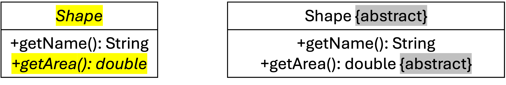
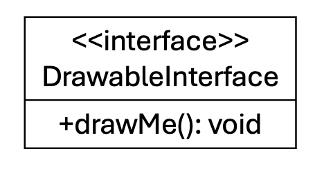

Abstract Classes and Interfaces
Liting Zhang
University of West Florida
Today's Roadmap
Chapter 9 builds on inheritance by adding two ways to describe required behavior.
Abstract classes: shared code plus required methods for subclasses.
Concrete classes: classes that can actually be used to create objects.
Abstract methods: method headers that subclasses must finish.
Interfaces: contracts that say what methods a class must provide.
Abstract class vs. interface: choosing the right tool for a design.
Employee payroll examples that combine these ideas.
Reading focus: Chapter 9, Abstract Classes and Interfaces
What You Should Be Able To Do
Explain why an abstract class cannot be instantiated.
Write an abstract method and implement it in a concrete subclass.
Use
extendswith an abstract base class.Use
implementswith an interface.Explain what happens when a class does not implement a required method.
Choose between an abstract class and an interface for a simple design.
Main question for the chapter: are we sharing code, requiring behavior, or both?
Abstract Class Vocabulary
An abstract class describes a common idea, but it is not complete enough to create directly.
abstract class: a class that cannot be instantiated. Example:
Employeeconcrete class: a class that can be instantiated. Example:
Managerabstract method: a method header without a body. Example:
public abstract double getAnnualBonus();method signature: the method name and parameter list. Example:
getAnnualBonus()instantiate: create an object with
new. Example:new Manager(...)
Abstract Classes: Shared Design, Concrete Implementation
- In UML, an abstract class is represented by italicizing the class name or by appending the {abstract} property text
The abstract class describes the shared idea.
The abstract method is required but not finished there.
The concrete subclass implements the missing method.
Objects can be created from the concrete subclass, not from the abstract class.

Abstract Employee Base Class
The base class stores shared employee data and requires each employee type to define its own bonus rule.
static abstract class Employee {
private String name;
private double salary;
public Employee(String name, double salary) {
this.name = name;
this.salary = salary;
}
public String getName() {
return name;
}
public double getSalary() {
return salary;
}
public abstract double getAnnualBonus();
}example:
PayrollAbstract.java
Concrete Employee Subclasses
A concrete subclass must provide the body for every inherited abstract method.
static class Manager extends Employee {
public Manager(String name, double salary) {
super(name, salary);
}
@Override
public double getAnnualBonus() {
return getSalary() * 0.10;
}
}
static class Staff extends Employee {
public Staff(String name, double salary) {
super(name, salary);
}
@Override
public double getAnnualBonus() {
return getSalary() * 0.05;
}
}ManagerandStaffboth finishgetAnnualBonus().example:
PayrollAbstract.java
Example: Cannot Create an Abstract Object
An abstract class can be used as a base class, but not as the object type after new.
public class AbstractEmployeeInstantiationBroken {
static abstract class Employee {
public abstract double getAnnualBonus();
}
public static void main(String[] args) {
Employee employee = new Employee(); // error
}
}The compiler rejects
new Employee()becauseEmployeeis abstract.example:
AbstractEmployeeInstantiationBroken.java
When an Abstract Class Fits
Use an abstract class when related classes need shared code and required behavior.
Shared fields:
name,salary.Shared methods:
getName(),getSalary(),printInfo().Required method:
getAnnualBonus().The base class keeps common code in one place.
The subclasses fill in the parts that differ.
Interface Vocabulary
An interface describes required methods without storing normal object data.
interface: a method contract that a class agrees to follow. Example:
PayReportimplements: the keyword used when a class agrees to an interface. Example:
implements PayReportrequired method: a method the class must provide. Example:
printReport()contract: a promise that certain method calls will be available.
Think of an interface as a checklist of methods a class must have.
Interface Method Contract
The interface lists the required method, and the class provides the method body.
public class PayReportInterface {
interface PayReport {
void printReport();
}
static class Manager implements PayReport {
private String name;
public Manager(String name) {
this.name = name;
}
@Override
public void printReport() {
System.out.println(name + " report ready");
}
}
}example:
PayReportInterface.java
Interfaces in UML
UML marks an interface with <<interface>> above the interface name.
The box names the interface.
The method listed in the box is required.
A class that implements the interface must provide that method.

Example: Missing Interface Method
A class that implements an interface must provide all required methods.
public class InterfaceMethodMissingBroken {
interface PayReport {
void printReport();
}
static class Staff implements PayReport {
private String name;
public Staff(String name) {
this.name = name;
}
// error: printReport() is missing
}
}The compiler rejects
StaffbecauseprintReport()is missing.example:
InterfaceMethodMissingBroken.java
Multiple Interfaces
A class can implement more than one interface when it agrees to multiple method contracts.
interface PayReport {
void printReport();
}
interface ContactCard {
String contactLine();
}
static class Staff implements PayReport, ContactCard {
@Override
public void printReport() {
System.out.println("Pay report ready");
}
@Override
public String contactLine() {
return "Bob <bob@uwf.edu>";
}
}Staffmust provide methods from both interfaces.example:
MultipleInterfaces.java
Abstract Class vs. Interface
Both tools can require methods, but they are useful for different design needs.
| Use this | When the design needs... |
|---|---|
| abstract class | shared fields, shared methods, and required methods |
| interface | a method contract that different classes can agree to |
Employeeis a good abstract class because all employees share data.PayReportis a good interface because it only requires a reporting method.
Combining an Abstract Class and an Interface
A class can inherit shared code from an abstract class and also follow an interface contract.
interface PayReport {
void printReport();
}
static abstract class Employee implements PayReport {
private String name;
private double salary;
public Employee(String name, double salary) {
this.name = name;
this.salary = salary;
}
public double getSalary() {
return salary;
}
public abstract double getAnnualBonus();
@Override
public void printReport() {
System.out.printf("%s: bonus $%.2f%n", name, getAnnualBonus());
}
}Employeestores shared data and requiresgetAnnualBonus().PayReportrequiresprintReport().example:
EmployeeAbstractInterface.java
Design Check: What Are We Trying to Say?
Before writing abstract or interface, describe the design in plain English.
Manageris anEmployee: use inheritance.Staffis anEmployee: use inheritance.Every employee can produce a pay report: use an interface or shared method.
Different employee types compute bonuses differently: use an abstract method.
Key Takeaways
An abstract class cannot be instantiated.
An abstract method has no body in the abstract class.
A concrete subclass must implement inherited abstract methods.
An interface is a contract of required methods.
A class uses
extendsfor a superclass andimplementsfor an interface.Use an abstract class for shared code plus required behavior.
Use an interface when the main goal is a method contract.